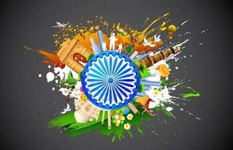

festivals are larger than life celebrations of various things. They occur at regular intervals and helping in breaking the monotony of life. Furthermore, they give you the chance to celebrate the little and big things in life. festivals are the carriers of peace and joy in the communities. All nations of the world have certain religious and cultural festivals. However, India is one of the largest countries to celebrate numerous festivals. As India is a very cultural and diverse country, so are the festivals. They divide into three general categories of national, religious and seasonal.
Cultural Diversity in India-
Types of Indian festivals
As we can divide the Indian festivals into national, religious and seasonal, we see how they differ from each other. In general, national festivals are celebrated in honor of reputable people and events. The religious ones follow legends of faiths and their beliefs. The seasonal ones are celebrated with each season that we experience that varies from region to region.
National festivals
The National festivals include Republic Day, Independence Day, Gandhi Jayanti and more. These festivals are celebrated all over India. All the citizens of the country celebrate them irrespective of the religion, caste, creed, and sex. Everyone celebrates them with great patriotism. These festivals are gazetted holidays all over the country and are enjoyed with great enthusiasm.
Moreover, they help in setting aside the differences of the countrymen and unite each other like never before. The capital of India, New Delhi is the seat of national festivals. For instance, it witnesses the grand parade of the Republic Day. The flag hoisting takes place in New Delhi, which is broadcasted on national television for the whole country to see.
Religious festivals
The religious festivals are one of the most famous festivals not only throughout India but over the world. Some of the most prominent religious festivals are Diwali, Eid-Ul-Fitr, Christmas, Guru Nanak Jayanti, Holi and many more. Diwali and Holi are the most prominent festivals of the Hindu religion. They are very colorful and full of lights.
Next up, Eid-Ul-Fitr is an Islamic festival which celebrates the end of Ramadan. It is about delectable dishes and family gatherings. Christmas celebrates the birthday of Jesus Christ. Furthermore, it is about Christmas trees and Santa Claus. Guru Nanak Jayanti celebrates the birthday of Guru Nanak Dev.
Get the huge list of more than 500 Essay Topics and Ideas
Seasonal festivals
Finally, the particular regions of the country celebrate seasonal festivals. For instance, Bihu is a festival of Assam. Likewise, Tamil Nadu celebrates Pongal. In addition, there is Basant Panchami which people celebrate through North India and West Bengal as well.
Importance of festivalsfestivals are very important. They make us forget our cultural and religious differences. They unite people and they come together for the sole purpose of celebration and happiness. Other than that, festivals also help us embrace our culture and religion. They are very helpful in breaking the monotony of life.
Moreover, people look forward to festivals all-round the year. festivals spark joy and give people something to look forward to. In addition, people also repair their homes and paint them that look like brand new. It beautifies the look of the locality.
In short, festivals fill our lives with colors and enthusiasm. They bring us closer every year and eliminate any feelings of communal hatred. Further, they strengthen the bonds of the community and remove the malice from people’s hearts. Therefore, festivals are quite important and must be celebrated with passion.

.jpg)

.jpg)
.jpg)
.jpg)